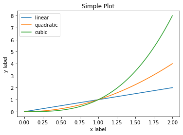
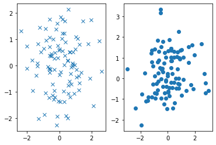

Interfases para la creación de gráficos en Matplotlib — 7:08 min
7:08 min | Última modificación: Octubre 6, 2021
Anatomia de una gráfica

Interfaz orientada a objetos
[1]:
import matplotlib.pyplot as plt
import numpy as np
#
# Datos del eje X
#
x = np.linspace(0, 2, 100)
#
# Crea una figura y un eje para graficar
#
fig, ax = plt.subplots()
#
# Construye cada line plot y especifica la legenda
#
ax.plot(x, x, label='linear')
ax.plot(x, x**2, label='quadratic')
ax.plot(x, x**3, label='cubic')
#
# Titulos
#
ax.set_xlabel('x label')
ax.set_ylabel('y label')
ax.set_title("Simple Plot")
#
# Hace visible la legenda
#
ax.legend()
plt.show()

Interfaz de pyplot
[2]:
#
# La figura se crea al llamar a plt.plot()
# Construye cada line plot y especifica la legenda
#
plt.plot(x, x, label='linear')
plt.plot(x, x**2, label='quadratic')
plt.plot(x, x**3, label='cubic')
#
# Titulos
#
plt.xlabel('x label')
plt.ylabel('y label')
plt.title("Simple Plot")
#
# Hace visible la legenda
#
plt.legend()
plt.show()

Creación de funciones (método recomendado por Matplotlib)
[3]:
#
# Esqueleto de la función
#
def my_plotter(ax, data1, data2, param_dict):
#
# Código del usuario aquí
#
out = ax.plot(data1, data2, **param_dict)
return out
[5]:
#
# Ejemplo de Uso 1
#
data1, data2, data3, data4 = np.random.randn(4, 100)
fig, ax = plt.subplots(1, 1)
my_plotter(ax, data1, data2, {'marker': 'o', 'linestyle': ''})
plt.show()

[6]:
#
# Ejemplo de Uso 2
#
fig, (ax1, ax2) = plt.subplots(1, 2)
my_plotter(ax1, data1, data2, {'marker': 'x', 'linestyle': ''})
my_plotter(ax2, data3, data4, {'marker': 'o', 'linestyle': ''})
plt.show()
